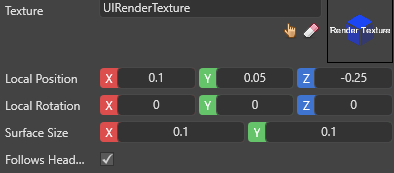
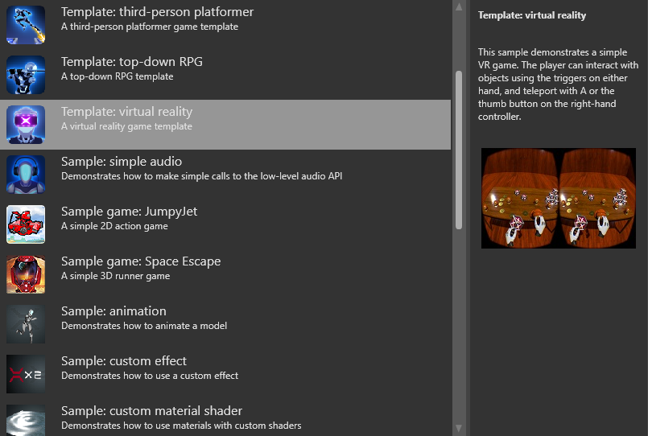

Overlays
In VR games, you can display textures (including render textures) as overlays that appear to float in front of the player. This is especially useful for UIs.
Note
You can't see overlays when you don't run your game in your VR device. This is because the VR device itself creates the overlay.
This page explains how to add an overlay. To display a UI in an overlay, you need to render the UI to a render texture, and display the render texture in the overlay. For instructions, see Display a UI in an overlay.
Add an overlay
In the Asset View (in the bottom pane by default), double-click the Graphics Compositor asset.

The graphics compositor editor opens.
For more information about the graphics compositor, see the Graphics compositor page.
In the graphics compositor editor, select the forward renderer node.

In the Property Grid (on the right by default), expand VR Settings.

Next to Overlays, click
 (Add).
(Add).Game Studio adds a new overlay to the list.

Next to Texture, click
 (Select an asset).
(Select an asset).The Select an asset window opens.

Select the texture you want to display in the overlay and click OK.
Your game is now ready to render the UI to an overlay in your VR device.
Multiple overlays
You can add as many overlays as you need. To add another overlay, click Add to overlays  and follow the instructions above from step 4.
and follow the instructions above from step 4.
Note
If overlays overlap in the user view, overlays first in the list appear on top.
Overlay properties

| Property | Description |
|---|---|
| Texture | The texture displayed in the overlay |
| Local position | The position of the overlay relative to the user |
| Local rotation | The rotation of the overlay relative to the user |
| Surface size | The size of the overlay in world units |
| Follows head | Follow the user's head so the overlay is always in front of their view |
VR template
For an example of a UI overlay implemented in a VR game, see the VR template included with Stride.
